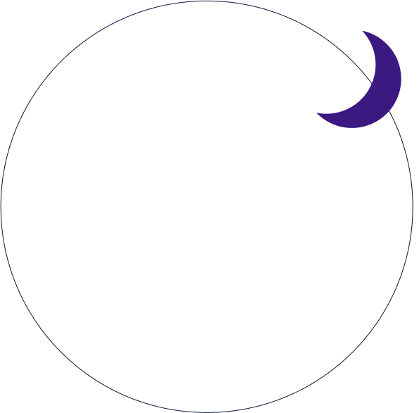

How to read Tarot cards
Discover the ancient art of tarot, your guide to self, discovery and insight. Learn card meanings, explore spreads, and start reading with confidence. Unlock the wisdom within.



Discover the ancient art of tarot, your guide to self, discovery and insight. Learn card meanings, explore spreads, and start reading with confidence. Unlock the wisdom within.
Tarot began in 15th-century in Italy as a card game, but over time evolved into a powerful tool for spiritual insight and divination. Mystical and occult teachings were added to the decks, and the images on the cards became more symbolic and allegorical.

By the 18th and 19th centuries, sccultists and mystics embraced the cards for their deeper meanings. In the 20th century, tarot surged in popularity, becoming a key part of the New Age movement.
Today, tarot is more accessible than ever, used for clarity, growth, and personal empowerment.
With countless decks and spreads to explore, the world of tarot is open to everyone.
A standard tarot deck typically contains 78 cards, divided into two main categories:
The 22 Major Arcana cards represent life’s big moments, deep lessons, and spiritual growth.
These powerful cards highlight major shifts, personal evolution, and universal themes that shape our journey.
They often signal transformation, purpose, and insight into the soul.
Choose a card


Cleansing a tarot deck before a reading is a way to remove any negative energy that may have
accumulated on the cards and to prepare them for use…
Here are a few common methods: